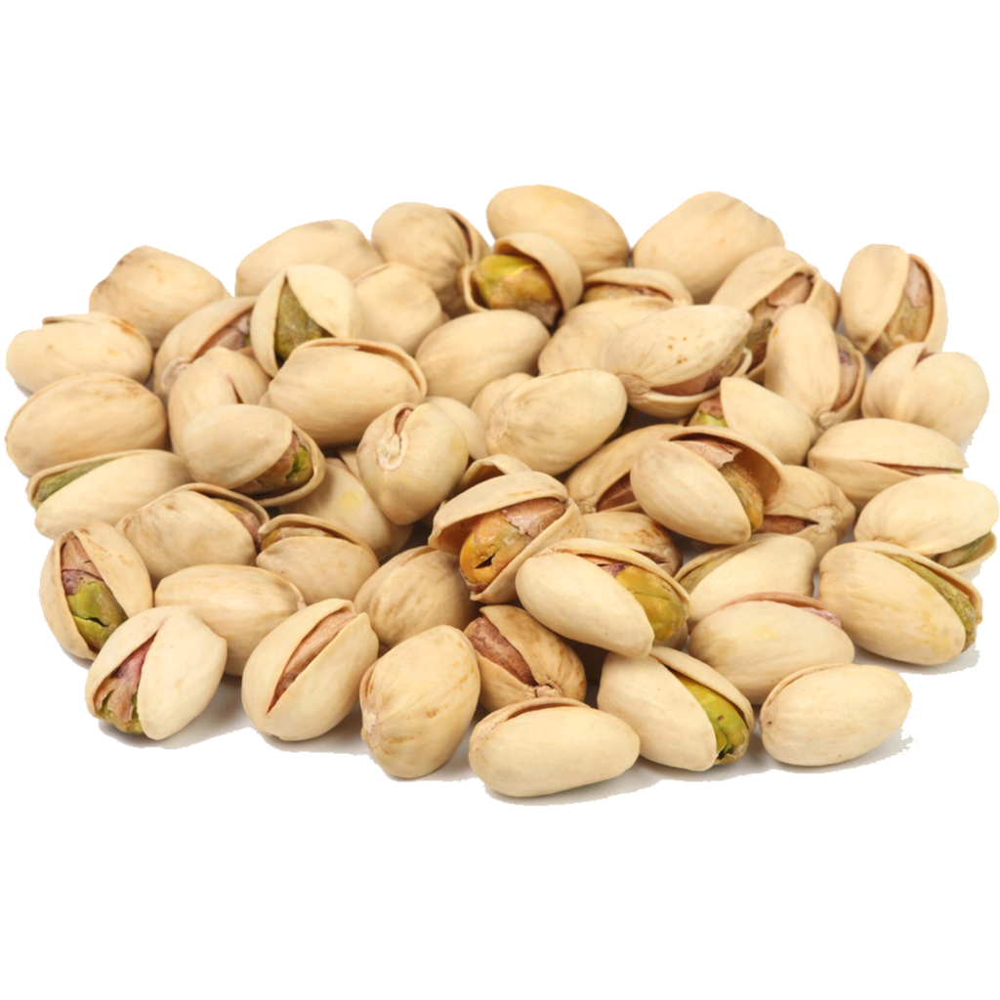
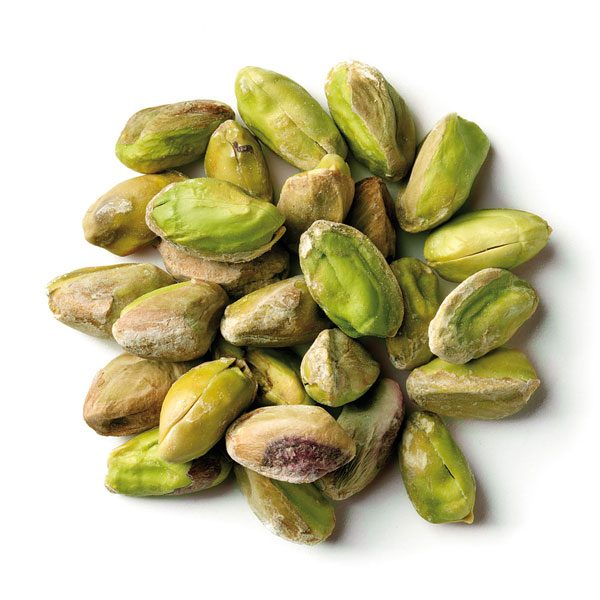

Pistachos
El pistacho nace del árbol pistachero o alfóncigo, denominado Pistacia Vera, perteneciente a la misma familia que el del anacardo. Sus orígenes se remontan a Asia occidental y Asia menor, donde comenzaron a cultivarse por primera vez en las zonas más secas de Irán, Turkmenistán, Turquía y Afganistán. De hecho, uno de los requisitos para que el alfóndigo dé sus frutos es que haya sido cultivado en zonas con mucho calor y con ambientes con índices de humedad bajos. La cáscara que recubre el pistacho alberga en su interior un fruto verde enormemente nutritivo, alargado y de un tamaño parecido al de una avellana. Frito, tostado o con un toque extra de sal, el pistacho es igualmente delicioso. Sin embargo, consumirlo crudo sigue siendo la opción más saludable.
Nuestras variedades de Pistachos
Pistacho con cascara
Pistacho pelado natural
PRECIOS
| Pistacho con cascara | Pistacho pelado natural | $1.993 | $3.223 |
|---|